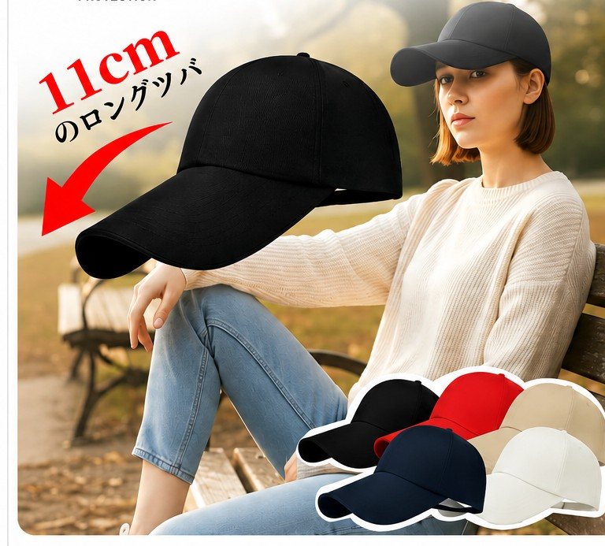
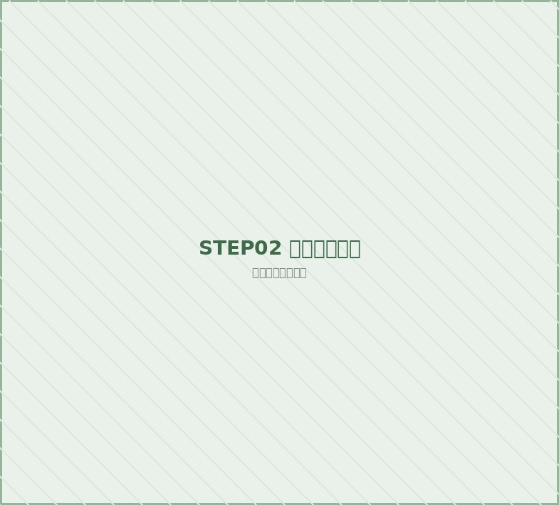
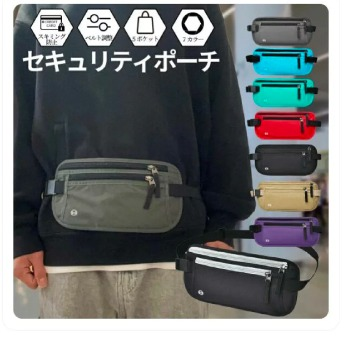
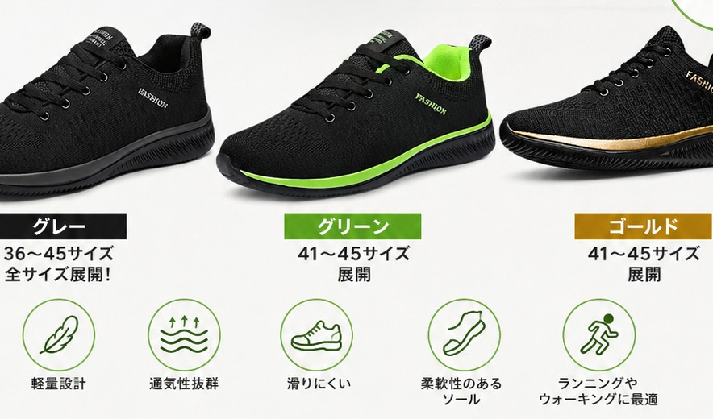
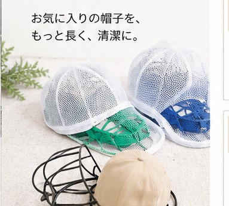
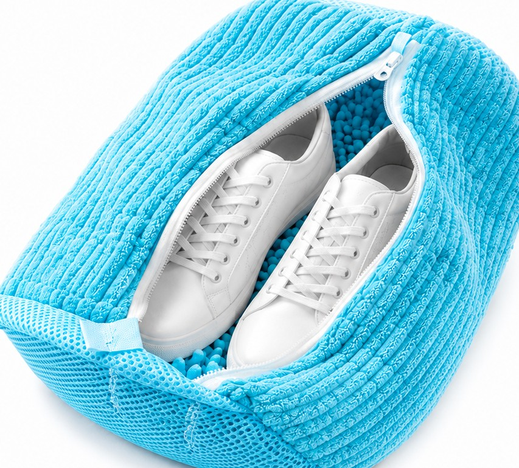
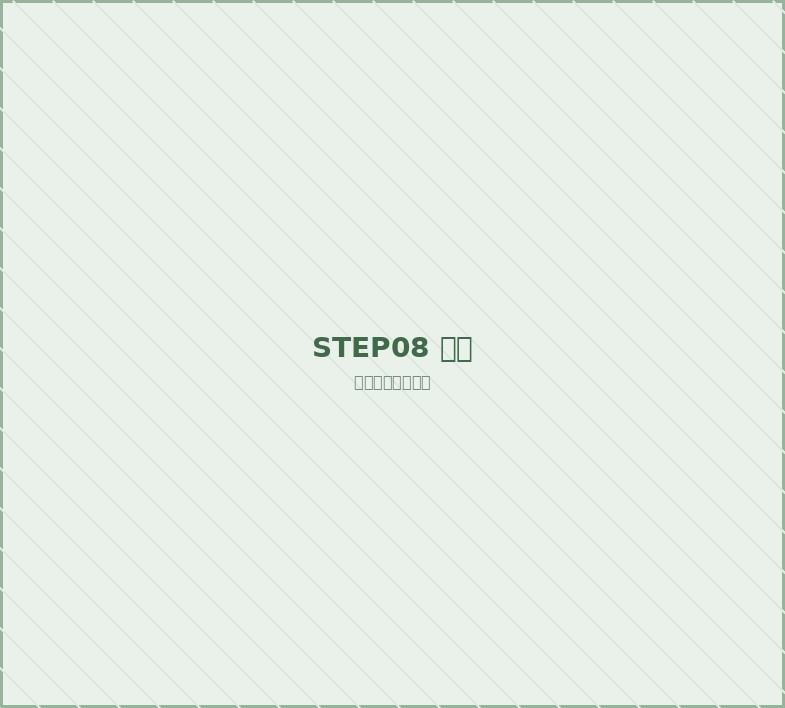
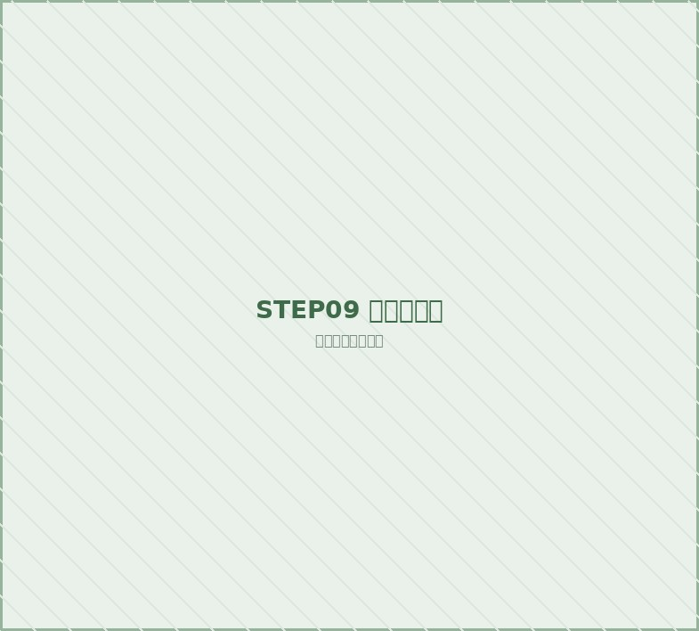

STEP 01 / PROTECT
日差しに備えて、外の時間を心地よく。
キャップ
外に出る前の準備から、運動後のケアまで。

STEP 01 / PROTECT
キャップ

STEP 02 / PROTECT
アームカバー

STEP 03 / PROTECT
セキュリティポーチ

STEP 04 / MOVE
ランニングシューズ

STEP 05 / CARE
帽子専用洗濯ネット

STEP 06 / CARE
シューズ用洗濯ネット
STEP 07 / REST
アイマスク

STEP 08 / REST
ノイズ低減耳栓

STEP 09 / REST
足つぼ商品
STEP 10 / REST
かかとケア商品
※価格・在庫状況・仕様は各モールの商品ページをご確認ください。
ONLINE STORE
楽天市場・Yahoo!ショッピング・Amazon・au PAY マーケットで展開しています。
お好きなモールからご覧ください。
※各モールのリンクは公式店舗ページです。クリックすると新しいタブで開きます。